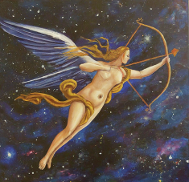
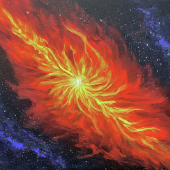

*Hover to see who has these Sagittarius Placements*
People with Sun in Sagittarius are known for their adventurous spirit and optimism.


The Moon in Sagittarius signifies a free-spirited and optimistic emotional nature.

Mercury in Sagittarius enhances communication with a philosophical and broad-minded approach.


Individuals with Venus in Sagittarius value freedom and adventure in relationships.

Mars in Sagittarius signifies a bold and adventurous approach to challenges.

Jupiter in Sagittarius brings luck, expansion, and a love for travel.


Saturn in Sagittarius encourages a disciplined approach to philosophical and ethical matters.

Uranus in Sagittarius brings innovative and unconventional ideas about freedom and exploration.

Neptune in Sagittarius fosters idealism and a quest for deeper truths.

Pluto in Sagittarius signifies transformational experiences related to beliefs and philosophy.


Having a Sagittarius rising means you approach life with enthusiasm and a sense of adventure.